| 이미 아는 내용 | 새로 해결할 문제 | 학습 순서 |
|---|---|---|
| Figure·Axes, plot, 축 라벨·범례 | 강조할 점을 글자와 화살표로 가리키기 | 텍스트 주석(그림 안 글자) → 좌표계(위치를 읽는 기준) → 화살표 주석(글자와 점 연결) |
| 축 범위(set_ylim), 자동으로 생기는 눈금 | 눈금의 위치와 문자열을 자료 단위에 맞추기 | 눈금 위치 규칙(locator) → 눈금 문자열 규칙(formatter) → 주·보조 눈금 |
| rcParams["font.size"], classic 스타일 | 여러 그림의 모양을 한 번에 통일하기 | rcParams 여러 키 변경 → 스타일시트(이름 붙은 설정 묶음) → 적용 범위 |
| meshgrid, imshow·컬러바 | 두 입력에 대한 값을 높이로 표현하기 | 3차원 점·선 → 점 색(값에 따른 색) → 표면(격자를 잇는 면) → 시점(보는 각도) → 2차원 대안 |
Outline
- 가상 매장의 시간대별 방문자 그림: 매장 담당자가 바로 읽도록 강조 지점·눈금·모양 조정
- 요일·시각 두 입력의 방문자 수: 3차원으로 그릴 때 얻는 정보와 잃는 정보 비교
완성 기준: 각 주석·눈금·스타일·시점 설정이 그림에서 바꾸는 항목과 유지하는 항목을 같은 입력으로 설명 가능
방문자 보고 그림의 입력과 질문
- 입력 단계: 가상 매장의 월요일 9:00~18:00 시간대별 방문자 수 10개를 매장 담당자에게 선 그래프로 전달
- 담당자의 질문: ‘가장 붐비는 시각과 인원’, ‘오후 두 번째 정점의 시각’
import numpy as np
import matplotlib.pyplot as plt
plt.rcParams['font.size'] = 24
hours = np.arange(9, 19)
monday = np.array([12, 18, 25, 41, 38,
22, 19, 24, 30, 16])
peak = monday.argmax()
print(hours[peak], monday[peak], hours[8], monday[8])12 41 17 30
hours: 9~18의 정수 10개(끝값 19 제외)monday: 월요일(Monday)의 시각별 방문자 배열,monday[i]는hours[i]시각의 방문자 수(명)argmax: 최댓값 위치 3 반환(12시 41명)- 위치 8의 17시 30명: 앞뒤 24·16명보다 많은 오후 두 번째 정점
def draw_monday():
fig, ax = plt.subplots(figsize=(8, 4))
ax.plot(hours, monday, '-o')
ax.set(xlabel='Hour', ylabel='Visitors',
ylim=(0, 50))
return fig, ax
fig, ax = draw_monday()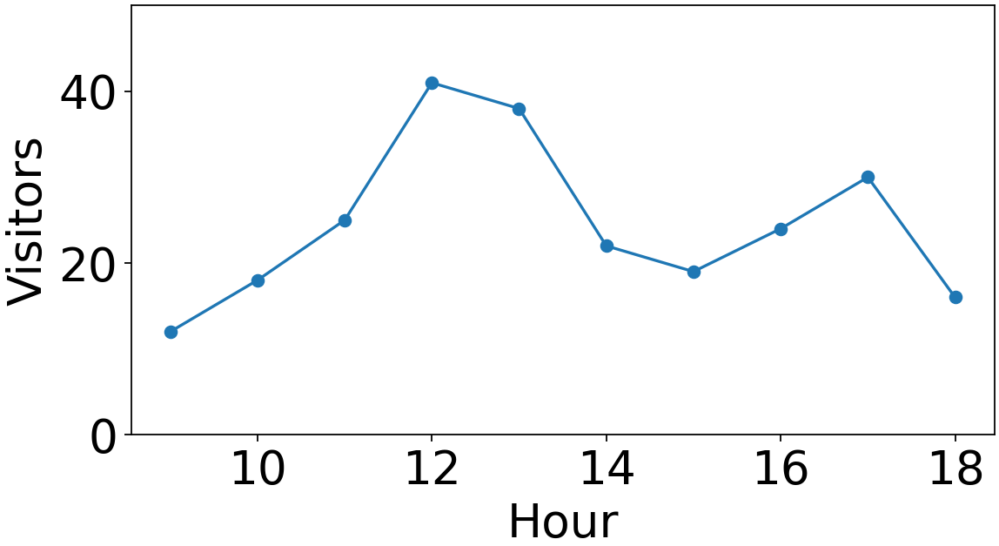
draw_monday(): 월요일 선 그래프(세로축 0~50명)를 새 Figure에 그려 (fig, ax) 반환, 이후 장표에서 설정을 하나씩 더하는 기준 그림- 남은 문제 1: 12시 점이 가장 높음은 보이지만 인원 41명은 표기 없음
- 남은 문제 2: 눈금이 10·12·…·18뿐이라 17시 위치는 어림 필요
데이터 좌표에 놓는 텍스트 주석과 가로 정렬
- 강조 단계: 최대 인원을 텍스트 주석, 즉
ax.text(x, y, 문자열)로 그림 안에 놓은 글자로 표기 - 위치 (x, y)의 기본 기준: 데이터 좌표, 즉 가로·세로 눈금 값과 같은 단위
draw_monday(): 월요일 선 그래프, 세로축 0~50명 · 최대 관측 (12시, 41명)
fig, ax = draw_monday()
ax.text(12, 43, 'Peak 41')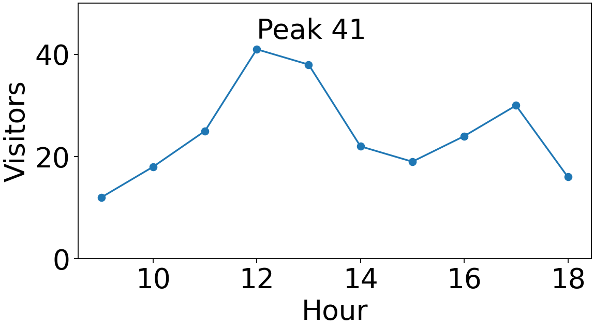
ha='left': 글자의 왼쪽 끝이 x=12에 놓여 정점 오른쪽으로 치우침fig, ax = draw_monday()
ax.text(12, 43, 'Peak 41', ha='center')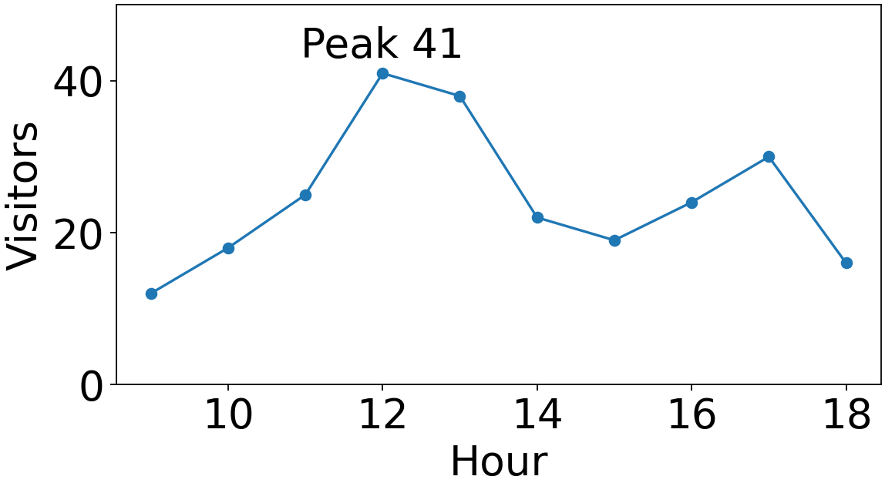
ha='center': 글자의 가운데가 x=12에 놓여 정점 바로 위에 위치- (x, y) = (12, 43): 정점의 시각 12, 점(41명)보다 2명 위라 글자가 점을 덮지 않는 높이 43
ha: 가로 정렬(horizontal alignment), 글자 상자의 어느 부분을 x에 맞출지 결정- y의 기준: 글자의 아래 기준선
- 점 하나를 설명하는 글자: 설명 대상 점의 데이터 좌표에 배치
- 정렬 옵션: 글자 위치만 변경, 선의 관측값 10개는 유지
텍스트 주석의 위치를 읽는 세 좌표계
- 위치 기준 단계: 그림 전체의 메모는 축 범위가 바뀌어도 제자리 유지 필요
transform: (x, y)를 읽을 좌표계 지정
draw_monday(): 월요일 선 그래프, 세로축 0~50명 · 두 번째 코드: 같은 그림의 세로축만 0~100명으로 변경
fig, ax = draw_monday()
ax.text(9, 46, 'data (9, 46)')
ax.text(0.5, 0.85, 'axes (0.5, 0.85)',
transform=ax.transAxes)
ax.text(0.6, 0.92, 'figure (0.6, 0.92)',
transform=fig.transFigure)ax.set_ylim(0, 100)| transform | 좌표 기준 | 세로축 0~100 후 |
|---|---|---|
ax.transData(기본) | 눈금 값(데이터 좌표) | 이동 |
ax.transAxes | Axes 영역 | 그대로 |
fig.transFigure | Figure 영역 | 그대로 |
- 영역 좌표(Axes·Figure): 왼쪽 아래 (0, 0), 오른쪽 위 (1, 1)
- Figure 좌표 y=0.92: Axes 위쪽 바깥 위치
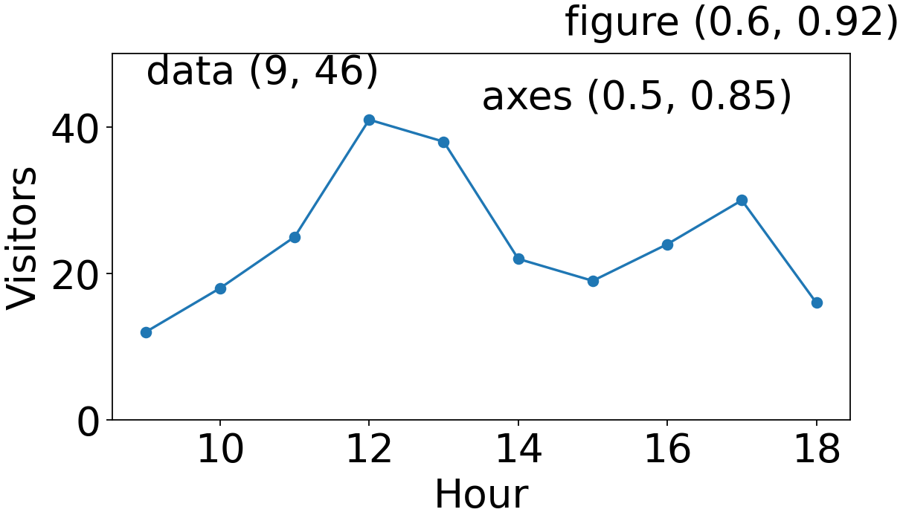
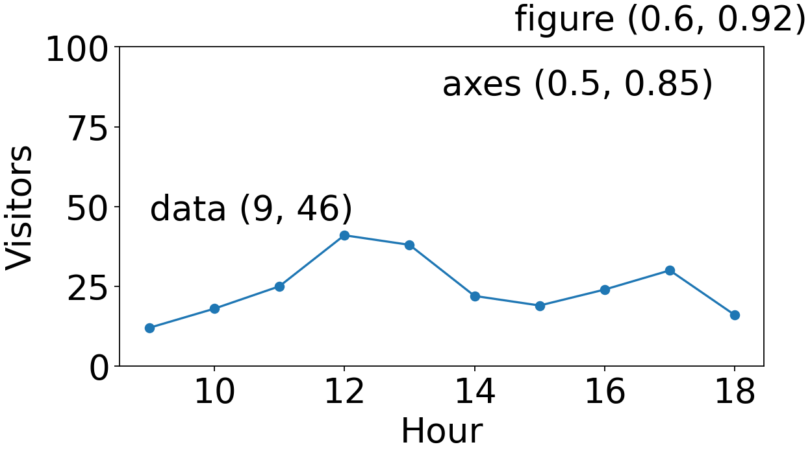
좌표계 선택: 데이터 점 설명은 데이터 좌표, Axes 안 고정 메모는 Axes 좌표, Axes 바깥 문구는 Figure 좌표
화살표 주석의 대상 점과 글자 위치
- 연결 단계: 글자를 선과 겹치지 않게 멀리 두면 설명 대상 점이 불분명
ax.annotate: 가리킬 점xy와 글자 위치xytext를 따로 받아 화살표로 연결
draw_monday(): 월요일 선 그래프, 세로축 0~50명 · 최대 관측 (12시, 41명) · 14시 관측은 22명
fig, ax = draw_monday()
ax.annotate('Peak 41', xy=(12, 41),
xytext=(14, 46))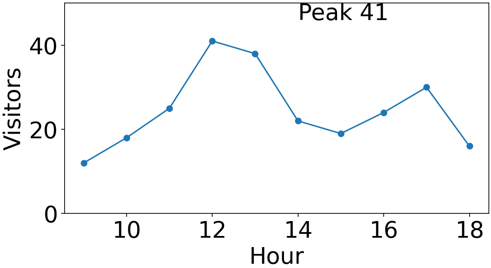
fig, ax = draw_monday()
ax.annotate('Peak 41', xy=(12, 41),
xytext=(14, 46),
arrowprops=dict(arrowstyle='->'))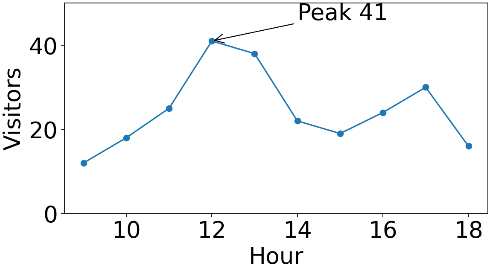
xy·xytext의 기본 기준: 데이터 좌표dict(arrowstyle='->'): 사전{'arrowstyle': '->'}와 같은 값'->':xy쪽 끝에 화살촉을 단 선
ax.text: 글자만,ax.annotate: 글자와 대상 점의 연결 표현- 화살표: arrowprops 지정 시에만 표시
눈금의 위치 규칙과 문자열 규칙
- 눈금 진단 단계: 17시 위치에 눈금 없음
- 각 축: 주 눈금(major)·보조 눈금(minor)마다 규칙 한 쌍 보유
- 규칙 한 쌍: 눈금 위치 규칙(locator)은 눈금 위치, 눈금 문자열 규칙(formatter)은 눈금 옆 문자열 결정
draw_monday(): 월요일 선 그래프 · hours = [9, 10, …, 18] · 자동 가로 범위 8.55~18.45 (양쪽 여백 포함) · 기본 그림의 가로 눈금: 10·12·14·16·18
fig, ax = draw_monday()
xa = ax.xaxis
print(type(xa.get_major_locator()).__name__,
type(xa.get_major_formatter()).__name__,
type(xa.get_minor_locator()).__name__)
lo, hi = ax.get_xlim()
n = xa.get_tick_space()
print(round(hi - lo, 2), n, round((hi - lo) / n, 2))
print(ax.get_xticks())AutoLocator ScalarFormatter NullLocator 9.9 6 1.65 [ 8. 10. 12. 14. 16. 18. 20.]
ax.xaxis: 가로축(Axis) 객체type(객체).__name__: 객체의 종류 이름get_xticks(): 주 눈금 위치(범위 밖 8·20은 그리지 않음)
| 기본 규칙 | 하는 일 |
|---|---|
| AutoLocator | 후보 간격 1·2·2.5·5·10 중 하나로 주 눈금 배치 |
| ScalarFormatter | 위치 숫자를 그대로 문자열로 표시 |
| NullLocator | 보조 눈금을 만들지 않음 |
get_xlim(): 가로 범위 8.55~18.45, 길이 9.9get_tick_space(): Axes 너비와 눈금 글자 24pt로 정해지는 최대 간격 수 6
| 후보 간격 | 범위 9.9의 간격 수 | 최대 6과 비교 |
|---|---|---|
| 1 | 9.9 ÷ 1 = 9.9칸 | 6 초과 → 제외 |
| 2 | 9.9 ÷ 2 = 4.95칸 | 6 이하 → 선택 |
- 간격 선택: 9.9 ÷ 6 = 1.65 이상인 가장 작은 후보 간격 2
- 17시 눈금이 없는 원인: 간격 기준이 범위·Axes 너비이고 자료 단위(1시간)는 미반영
일정 간격 눈금 위치의 지정
- 위치 교정 단계:
plt.MultipleLocator(1)은 1의 배수마다 눈금을 두는 눈금 위치 규칙 - 효과: 자료 단위인 1시간을 주 눈금의 눈금 위치 규칙에 직접 지정
draw_monday(): 월요일 선 그래프 · 가로 범위 8.55~18.45 · 기본 AutoLocator: 간격 2, 눈금 10·12·14·16·18, 17시 눈금 없음
fig, ax = draw_monday()
ax.xaxis.set_major_locator(plt.MultipleLocator(1))
print(ax.get_xticks())[ 8. 9. 10. 11. 12. 13. 14. 15. 16. 17. 18. 19.]
set_major_locator: 주 눈금의 눈금 위치 규칙만 교체- 출력 12개 중 8·19: 범위 8.55~18.45 밖이라 그리지 않음
- 눈금 문자열 규칙: ScalarFormatter 그대로라 숫자 표시 유지
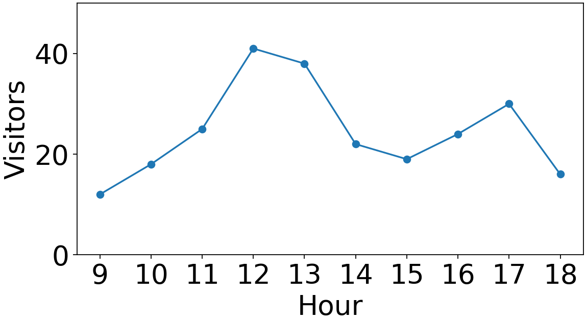
| 주 눈금 위치 규칙 | 간격 | 범위 안 눈금 | 17시 눈금 |
|---|---|---|---|
| AutoLocator(기본) | 2 | 5개 | 없음 |
| MultipleLocator(1) | 1 | 10개 | 있음 |
눈금 위치 규칙 교체: 눈금 위치만 변경, 선을 이루는 관측 10개의 좌표는 유지
함수로 정하는 눈금 문자열
- 문자열 교정 단계: 숫자 17보다 시각임을 바로 알리는 17:00 표기
plt.FuncFormatter: 눈금 위치 하나를 받아 문자열을 돌려주는 함수를 눈금 문자열 규칙으로 사용
draw_monday(): 월요일 선 그래프 · 주 눈금 위치 규칙: MultipleLocator(1), 표시 위치 9~18의 10개
def hour_label(value, pos):
return str(int(value)) + ':00'
fig, ax = draw_monday()
ax.xaxis.set_major_locator(plt.MultipleLocator(1))
ax.xaxis.set_major_formatter(plt.FuncFormatter(hour_label))
print(hour_label(17.0, 0))
print(ax.get_xticks())17:00 [ 8. 9. 10. 11. 12. 13. 14. 15. 16. 17. 18. 19.]
- 처리:
17.0→int(소수 버림) →17→str→'17'→+ ':00'→'17:00' pos: Matplotlib이 넘기는 눈금 순번,hour_label에서는 미사용- 사용 조건:
int가 소수를 버리므로 정수 위치에만 사용
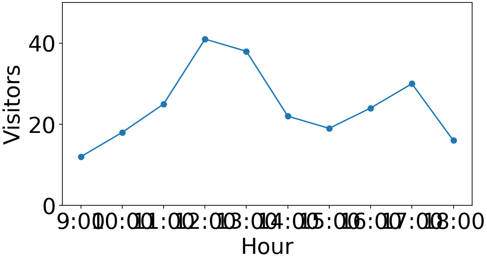
- 위치 출력: MultipleLocator(1)만 지정한 결과와 동일
- 변경 항목: 문자열만
'9:00'~'18:00'으로 변경
- 개선: 눈금 문자열이 시각임을 바로 전달
- 새 문제: 24pt 글자로 1시간마다 4~5글자(9:00~18:00)를 표시해 이웃 눈금 문자열끼리 겹침
주 눈금과 보조 눈금의 역할 분담
- 겹침 해결 단계 — 주 눈금:
MultipleLocator(3)·hour_label, 3시간마다 문자열 9:00·12:00·15:00·18:00·실선 눈금선 - 보조 눈금:
MultipleLocator(1)·NullFormatter(기본), 1시간마다 문자열 없는 짧은 선·점선 눈금선
draw_monday(): 월요일 선 그래프 · hour_label(value, pos): 17.0 → '17:00' · 1시간마다 문자열을 붙이면 9쌍이 겹침
fig, ax = draw_monday()
ax.xaxis.set_major_locator(plt.MultipleLocator(3))
ax.xaxis.set_minor_locator(plt.MultipleLocator(1))
ax.xaxis.set_major_formatter(plt.FuncFormatter(hour_label))
ax.tick_params(axis='x', which='major', length=12, width=2)
ax.tick_params(axis='x', which='minor', length=6, width=2)
ax.grid(axis='x', which='major', linewidth=2)
ax.grid(axis='x', which='minor', linestyle=':', linewidth=2)
print(ax.get_xticks())
print(ax.get_xticks(minor=True))
print(type(ax.xaxis.get_minor_formatter()).__name__)[ 6. 9. 12. 15. 18. 21.] [8.0, 10.0, 11.0, 13.0, 14.0, 16.0, 17.0, 19.0] NullFormatter
tick_params: 길이 주 12pt·보조 6pt, 두께 2pt(기본값은 거의 안 보임)
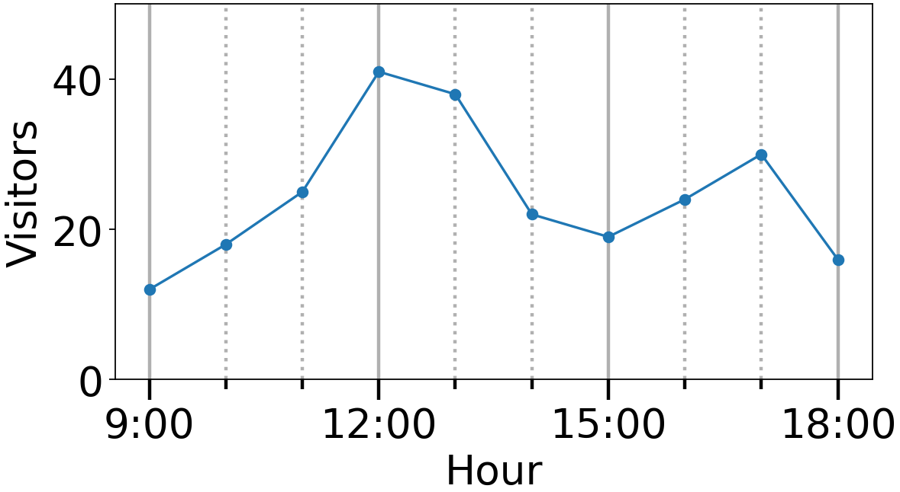
grid: 그림 영역을 가로지르는 눈금선(grid line), 주 실선·보조 점선get_xticks(minor=True): 보조 눈금 위치, 범위 밖 8·19 포함·주 눈금 위치 9·12·15·18 제외
- 역할 분담: 주 눈금 4개(간격 3)는 읽을 문자열, 보조 눈금 6개(간격 1)는 1시간 위치
- 결과: 1시간 위치 10개를 모두 표시하면서 눈금 문자열 겹침 0쌍
반복 설정을 기본값으로 옮기는 rcParams
- 통일 단계 목표: 보고서의 모든 그림에서 위·오른쪽 테두리 제거
- Axes마다 지정: 새 그림마다 반복 필요
- rcParams(Matplotlib의 기본 모양 설정) 변경: 이후 새로 만드는 그림의 기본값으로 적용
draw_monday(): 호출할 때마다 새 Figure·Axes 생성 · 현재 rcParams['font.size'] = 24
Axes 하나에 개별 지정
fig, ax = draw_monday()
ax.spines['top'].set_visible(False)
ax.spines['right'].set_visible(False)
fig2, ax2 = draw_monday()
print(ax.spines['top'].get_visible(),
ax2.spines['top'].get_visible())False True
spines: Axes의 네 테두리 선(top·bottom·left·right)set_visible(False): 숨김,get_visible(): 표시 여부 반환- 개별 지정: 지정한
ax하나만 변경, 새 그림ax2에는 위 테두리 다시 표시
rcParams 기본값 변경
report_rc = {'font.size': 24,
'axes.spines.top': False,
'axes.spines.right': False}
plt.rcParams.update(report_rc)
fig3, ax3 = draw_monday()
print(ax3.spines['top'].get_visible(),
ax2.spines['top'].get_visible())False True
update: 세 키를 한 번에 변경'axes.spines.top': axes 묶음 → spines → top 항목- font.size(이미 24) 포함 이유:
report_rc만으로 설정 전체 재적용 - 적용 대상: 새
ax3만 지정 없이 위 테두리 없음, 기존ax2는 그대로
- rcParams: 현재 Python 실행에서 이후 만드는 그림의 기본값
- Axes 메서드: 호출한 Axes 하나의 개별 지정
스타일시트가 바꾸는 키와 유지되는 키
- 스타일 선택 단계: 스타일시트는 rcParams 키와 값의 묶음에 붙인 이름(classic도 스타일시트의 하나)
- 적용 규칙: 스타일시트에 적힌 키만 변경, 나머지 키는 현재 값 유지
report_rc = {'font.size': 24, 'axes.spines.top': False, 'axes.spines.right': False} · 현재 rcParams에 적용됨
for name in ['grayscale', 'ggplot']:
with plt.style.context(name):
print(name, plt.rcParams['font.size'],
plt.rcParams['axes.facecolor'])grayscale 24.0 white ggplot 10.0 #E5E5E5
with plt.style.context(이름):블록 안에서만 지정한 스타일시트 적용- grayscale 스타일시트: font.size를 정하지 않아 24 유지
- ggplot 스타일시트:
font.size: 10.0을 정해 24를 덮어씀 axes.facecolor: Axes 배경색, #E5E5E5는 밝은 회색의 16진수 색 코드
with plt.style.context(['ggplot', report_rc]):
fig, ax = draw_monday()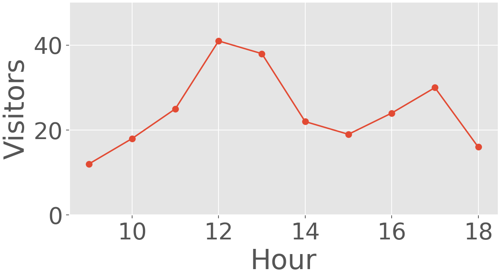
- 목록 적용 순서: 왼쪽부터, 뒤의
report_rc가 font.size 10을 24로 덮어씀
- 확인 절차: 스타일시트 적용 뒤 rcParams 값을 출력해 report_rc 설정 중 덮인 키 확인
- 지켜야 할 키: 스타일시트 목록 뒤쪽에 다시 지정
style.context와 style.use의 적용 범위
- 적용 범위 단계:
style.context는 with 블록이 끝나면 이전 rcParams 값으로 복원 style.use: 다른 값을 지정할 때까지 현재 Python 실행 전체의 rcParams 변경
현재 rcParams: axes.facecolor = 'white', font.size = 24 · report_rc = {'font.size': 24, 'axes.spines.top': False, 'axes.spines.right': False}
print(plt.rcParams['axes.facecolor'])
with plt.style.context('ggplot'):
print(plt.rcParams['axes.facecolor'])
print(plt.rcParams['axes.facecolor'])white #E5E5E5 white
style.context: 블록을 벗어나면 배경색이 white로 복원
| 방식 | 적용 범위 | 쓰는 경우 |
|---|---|---|
| style.context | with 블록 안 | 그림 하나에만 스타일시트 적용 |
| style.use | 이후 현재 실행 전체 | 스크립트 시작에서 전체 통일 |
plt.style.use('ggplot')
print(plt.rcParams['axes.facecolor'],
plt.rcParams['font.size'])#E5E5E5 10.0
style.use뒤 그대로 두면: 뒤의 모든 그림이 회색 배경·10pt 글자- 복원 방법: 기본값 묶음
'default'와report_rc를 다시 지정
plt.style.use(['default', report_rc])
print(plt.rcParams['axes.facecolor'],
plt.rcParams['font.size'])white 24.0
공통점: 두 방식 모두 현재 Python 실행의 rcParams만 변경, 새로 시작한 Python 실행에는 남지 않음
스타일시트 기본값과 화살표 주석의 개별 지정
- 결합 점검 단계: 스타일시트가 주석 모양에도 기본값을 주어 ggplot에서는 화살표가 배경에 묻힘
- 해결: 화살표 색만 개별 지정해 스타일시트 기본값보다 우선 적용
draw_monday(): 월요일 선 그래프 · 화살표 주석: xy=(12, 41), xytext=(14, 46), arrowstyle '->' · ggplot 배경 #E5E5E5
with plt.style.context(['ggplot', report_rc]):
fig, ax = draw_monday()
ax.annotate('Peak 41', xy=(12, 41),
xytext=(14, 46),
arrowprops=dict(arrowstyle='->'))with plt.style.context(['ggplot', report_rc]):
fig, ax = draw_monday()
ax.annotate('Peak 41', xy=(12, 41),
xytext=(14, 46),
arrowprops=dict(arrowstyle='->',
color='black'))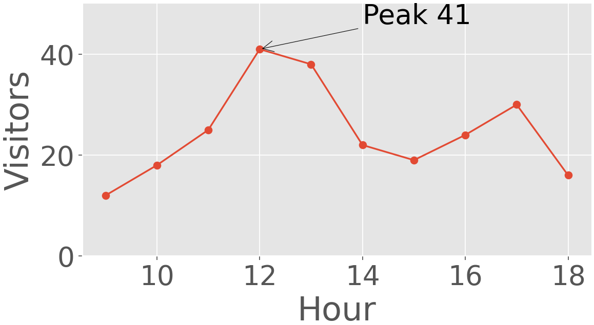
color='black': 화살표만 검은색, 나머지는 ggplot 그대로원인: ggplot의 patch.edgecolor: EEEEEE(도형 테두리 기본색)가 화살표 선 색으로 쓰임(default 스타일시트에서는 검은색)
- 우선순위: 함수 인자의 개별 지정(요소 하나) > 스타일시트의 공통 기본값
- 스타일시트 변경 뒤: 주석과 배경의 구별 여부 재확인
방문자 보고 그림의 조립 순서
- 조립 단계: 스타일시트 적용 → 그림 생성 → 주석 → 눈금 순서로 한 그림에 모아 담당자의 두 질문에 답변
- 그림 생성·주석을 with 블록 안에 두는 이유: Axes 배경색·선 색 같은 rcParams 값은 Axes·선·주석을 만드는 시점에 읽힘
질문: 가장 붐비는 시각과 인원(12시 41명), 오후 두 번째 정점의 시각(17시 30명) · hour_label: 17.0 → '17:00'
with plt.style.context(['ggplot', report_rc]):
fig, ax = draw_monday()
ax.annotate('Peak 41', xy=(12, 41), xytext=(14, 46),
arrowprops=dict(arrowstyle='->', color='black'))
ax.annotate('2nd 17:00', xy=(17, 30), xytext=(14.8, 38),
arrowprops=dict(arrowstyle='->', color='black'))
ax.text(0.02, 0.88, 'Mon', transform=ax.transAxes)
ax.xaxis.set_major_locator(plt.MultipleLocator(3))
ax.xaxis.set_minor_locator(plt.MultipleLocator(1))
ax.xaxis.set_major_formatter(plt.FuncFormatter(hour_label))
ax.tick_params(axis='x', which='major', length=12, width=2)
ax.tick_params(axis='x', which='minor', length=6, width=2)
ax.grid(axis='x', which='minor', linestyle=':', linewidth=2)
print(plt.rcParams['axes.facecolor'])white
- 블록 종료 뒤: rcParams 배경색은 white로 복원, 블록 안 Axes는 회색 유지
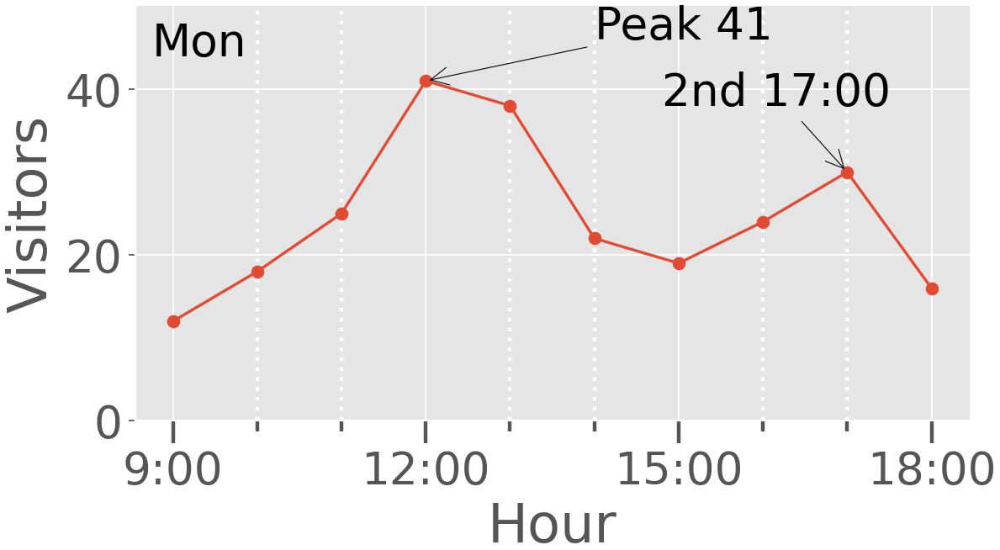
| 질문 | 그림의 근거 |
|---|---|
| 최대 시각·인원 | 화살표가 가리키는 12:00 점과 글자 41 |
| 오후 두 번째 정점 | 두 번째 화살표가 가리키는 점과 글자 2nd 17:00 |
- 주석·눈금·스타일: 관측 10개는 그대로 두고 읽는 경로만 변경
- 저장: 이전에 배운
fig.savefig로 같은 그림을 파일로 기록
요일·시각 두 입력의 방문자 격자
- 단계 전환 — 지금까지: 월요일 하루의 ‘시각 → 방문자’(입력 1개)
- 지금부터: ‘요일·시각 → 방문자’(입력 2개)를 함께 보며 12시 정점의 요일별 반복 여부 확인
hours = [9, 10, …, 18] · monday = [12, 18, 25, 41, 38, 22, 19, 24, 30, 16] · meshgrid: 두 1차원 배열로 모든 칸의 좌표 배열 생성
plt.close('all')
tuesday = np.array([10, 15, 22, 36, 33,
20, 18, 22, 27, 14])
wednesday = np.array([14, 20, 28, 45, 40,
25, 21, 26, 33, 18])
V = np.array([monday, tuesday, wednesday])
days = np.array([0, 1, 2])
X, Y = np.meshgrid(hours, days)
print(V.shape, X.shape, Y.shape)
print(X[1, 4], Y[1, 4], V[1, 4])(3, 10) (3, 10) (3, 10) 13 1 33
plt.close('all'): 월요일 단계에서 연 Figure를 모두 닫음, 배열 hours·monday는 유지- 닫는 이유: 열린 Figure가 20개를 넘으면 Matplotlib 경고 발생
| V[행, 열] | 9 | 10 | 11 | 12 | 13 | 14 | 15 | 16 | 17 | 18 |
|---|---|---|---|---|---|---|---|---|---|---|
| 0 Mon | 12 | 18 | 25 | 41 | 38 | 22 | 19 | 24 | 30 | 16 |
| 1 Tue | 10 | 15 | 22 | 36 | 33 | 20 | 18 | 22 | 27 | 14 |
| 2 Wed | 14 | 20 | 28 | 45 | 40 | 25 | 21 | 26 | 33 | 18 |
days의 0·1·2: 월(Mon)·화(Tue)·수(Wed)의 순서 번호, 1.5 같은 중간값은 어떤 요일도 아님- 행:
days의 위치, 열:hours의 위치 - 같은 인덱스 [1, 4]:
X는 시각 13,Y는 요일 번호 1(화),V는 33명 - 세 요일 모두 12시 열이 각 행의 최댓값(굵게)
- 예제 범위: 표를 한 화면에 담기 위해 월·화·수 3개 요일만 사용, 실제 일주일 자료는 7요일 × 10시각 = 70칸
- 관측 한 칸: (시각, 요일 번호, 방문자) 세 값, 모두 30칸
- 다음 단계: 관측 한 칸의 세 값을 3차원 Axes의 x·y·z에 배치
3차원 Axes의 점과 선
- 3차원 표현 단계: 3차원 Axes는 x·y 바닥 평면 위에 z를 높이로 표시
- 2차원과 같은 방식:
plot3D(x, y, z, '-o')한 번으로 요일별 관측 10개의 점과 선
X·Y·V: 모양 (3, 10)의 시각·요일 번호·방문자 배열 · days = [0, 1, 2] (Mon·Tue·Wed) · hour_label: 12.0 → '12:00'
def axes3d():
fig = plt.figure(figsize=(8, 7))
ax = fig.add_subplot(projection='3d')
ax.xaxis.set_major_locator(plt.MultipleLocator(3))
ax.xaxis.set_major_formatter(plt.FuncFormatter(hour_label))
ax.set_yticks(days, ['Mon', 'Tue', 'Wed'], ha='left')
ax.set_zlabel('Visitors', labelpad=20)
return fig, ax
fig, ax = axes3d()
for d in days:
ax.plot3D(X[d], Y[d], V[d], '-o')
print(len(ax.lines), [len(l.get_xdata()) for l in ax.lines])3 [10, 10, 10]
plt.figure: 빈 Figure · add_subplot(projection='3d'): 3차원 Axes · set_yticks(위치, 문자열): 요일 이름, ha='left'로 18:00과 분리
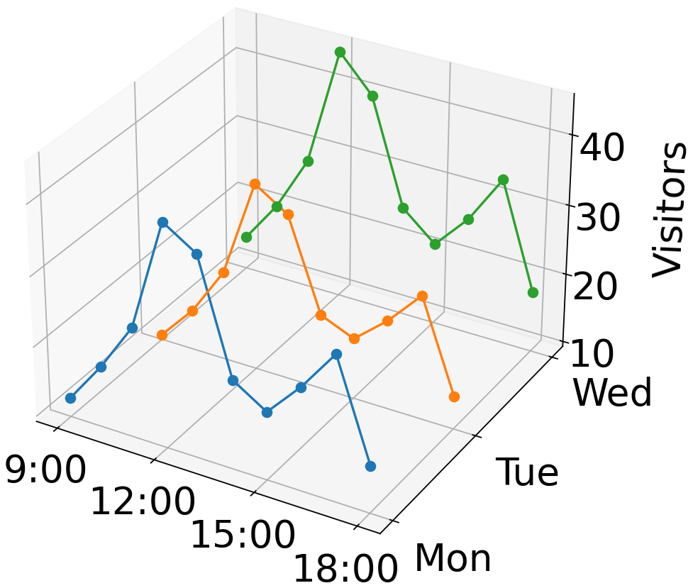
plot3D: 2차원 plot에 z 인자 추가,'-o'는 2차원과 같은 선+점plot3D(X[d], …): 요일 d 한 행의 10점 연결, 출력은 선 3개 × 점 10개 = 30칸- 점 색: 선 하나에 색 하나라 요일 구분색만 표시
labelpad=20: z축 이름과 눈금 사이 20pt
- 가로축: 기존 MultipleLocator(3)·hour_label 재사용
- 남은 문제: 점마다 방문자 수 색 지정 불가, 크기 비교는 높이로만 가능
점 색과 선 연결의 분담
- 색 추가 단계:
scatter3D는 점마다 색을 다르게 지정하는 3차원 산점도 - 분담: 점과 방문자 수 색은
scatter3D, 요일별 시각 순서 선은plot3D
axes3d(): 3차원 Axes, 시각 문자열 눈금(3시간)·요일 이름 눈금(Mon·Tue·Wed)·z축 Visitors · X·Y·V: 모양 (3, 10)
fig, ax = axes3d()
pts = ax.scatter3D(X, Y, V, c=V, cmap='viridis', s=60)
for d in days:
ax.plot3D(X[d], Y[d], V[d], color='gray')
print(len(pts.get_offsets()), len(ax.lines))30 3
| 구성 | 점 색의 기준 | 선 |
|---|---|---|
plot3D('-o')만 | 요일(선마다 한 색) | 요일별 연결 |
scatter3D + plot3D | 점마다 방문자 수 | 요일별 연결(회색) |
- 점 개수: 두 구성 모두 30개, 차이는 점 색의 기준뿐
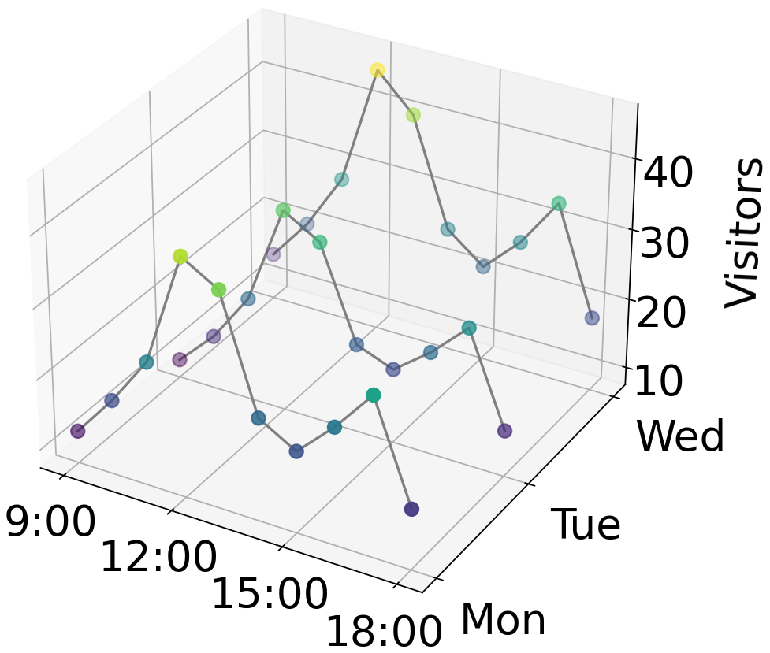
scatter3D(X, Y, V): [d, h] 세 값 → 점 1개의 (x, y, z)c=V: 점 색 = 방문자 수(노랑이 많음)s=60: 점 크기color='gray': 선만 그리고 점 색과 구분되는 회색get_offsets(): 점 위치 목록
- scatter3D가 필요한 이유:
plot3D는 선 하나에 색 하나만 지정 - 결과: 각 요일 안에서 12시 점이 가장 밝은 색, 정점의 요일별 반복을 색으로도 확인
격자 위의 와이어프레임과 표면
- 면 표현 단계 — 와이어프레임(wireframe): 격자의 행·열 방향으로 이웃한 관측을 선으로 연결
- 표면(surface): 이웃한 네 관측 사이를 색칠한 면으로 채움
axes3d(): 3차원 Axes, 시각 문자열 눈금(3시간)·요일 이름 눈금·z축 Visitors · 관측 30칸 = 3요일 × 10시각 · 두 함수의 공통 입력: X·Y·V 같은 (3, 10) 격자 배열
fig, ax = axes3d()
ax.plot_wireframe(X, Y, V)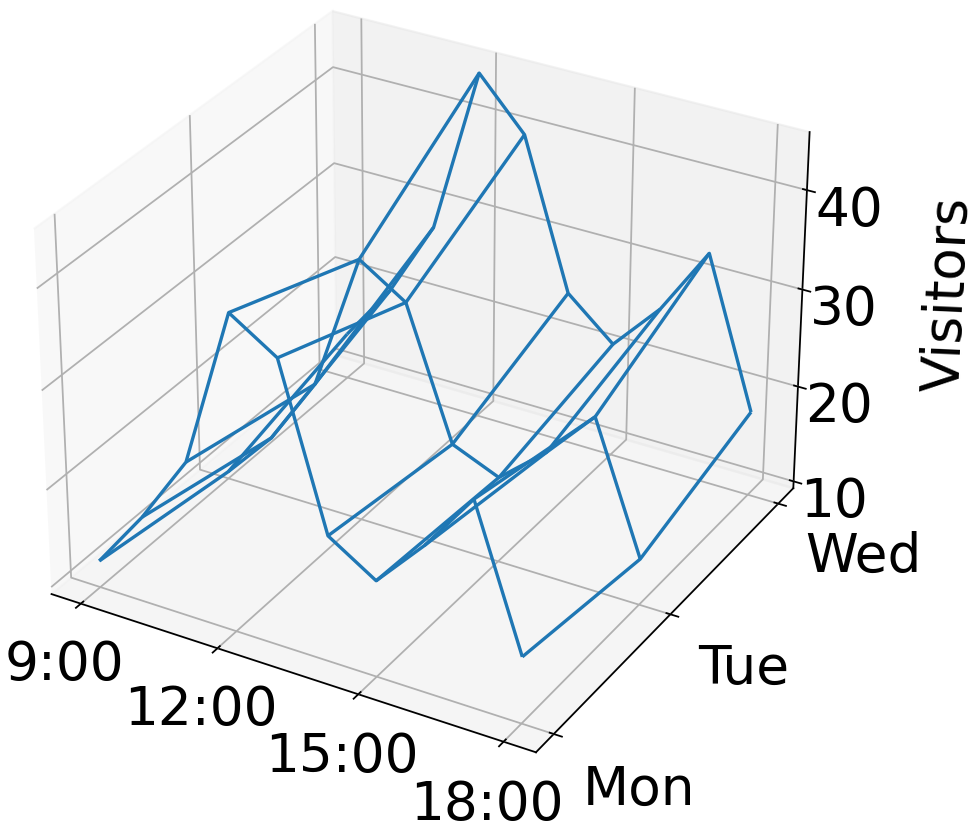
fig, ax = axes3d()
ax.plot_surface(X, Y, V, cmap='viridis')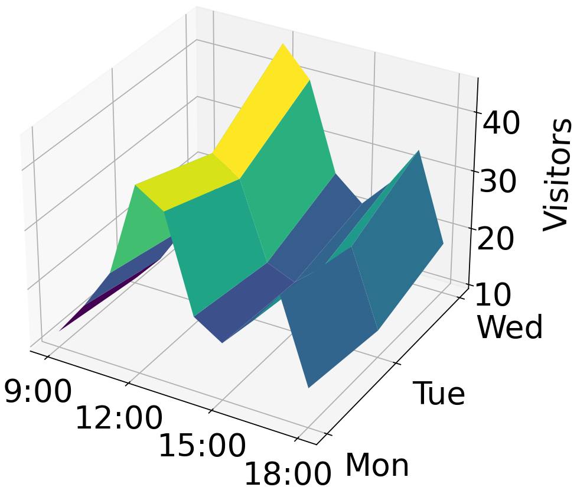
- 실제 관측: 격자 교차점 30개뿐
- 요일 사이·12:30 위치의 면: 꼭짓점을 이은 모양이라 값으로 읽지 않고 능선의 반복 구조 확인에 사용
시점 각도와 가려지는 비교
- 시점 단계:
view_init(elev, azim)은 데이터는 그대로 두고 바라보는 방향만 변경 elev: x·y 바닥 평면 위로 올려 본 각도,azim: z축을 중심으로 돈 각도(단위: 도)
axes3d() + plot_surface(X, Y, V): 3요일 × 10시각 표면 · azim=−90: Mon 앞쪽(요일 번호가 작은 쪽)에서 보는 정면, 가로가 시각·세로가 높이
fig, ax = axes3d()
ax.plot_surface(X, Y, V, cmap='viridis')
print(ax.elev, ax.azim)
ax.view_init(elev=0, azim=-90)
print(ax.elev, ax.azim)30 -60 0 -90
| 시점 | 드러나는 비교 | 숨는 비교 |
|---|---|---|
| 기본 (30°, −60°) | 시각·요일·높이의 전체 모양, 12시 능선 | 앞쪽 높은 면 뒤의 일부 |
| 정면 (0°, −90°) | 시각별 높이 윤곽: 12시 정점, 17시 두 번째 정점 | 요일 구분: 세 요일이 한 윤곽으로 겹침 |
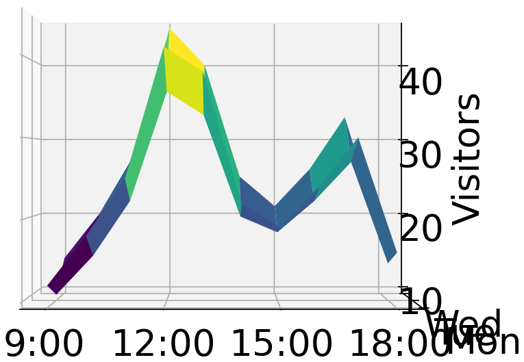
- 시점마다 다른 결과: 드러나는 비교와 숨는 비교
- 정지 그림 한 장으로 3차원 전달 시: 선택한 시점과 선택한 시점에서 숨는 비교를 함께 명시
정확한 값 읽기를 위한 2차원 대안
- 표현 선택 단계 질문: ‘화요일 13시는 몇 명인가?’(답 33)
- 3차원 표면: 원근으로 기운 높이를 z축 눈금까지 옮겨 어림 필요
- 2차원 대안: 같은 V를 imshow 격자로 그리고 칸마다 텍스트 주석으로 값을 적어 바로 읽음
V: (3, 10) 방문자, 행 = days 0·1·2(Mon·Tue·Wed), 열 = hours 9~18 · V[1, 4] = 33 (화 13시)
fig, ax = plt.subplots(figsize=(8, 4))
im = ax.imshow(V, origin='lower', cmap='Blues',
extent=[8.5, 18.5, -0.5, 2.5],
aspect='auto', vmin=0, vmax=60)
for d in days:
for h in range(10):
ax.text(hours[h], d, str(V[d, h]),
ha='center', va='center')
fig.colorbar(im, ax=ax, label='Visitors')
ax.set_yticks(days, ['Mon', 'Tue', 'Wed'])
ax.xaxis.set_major_locator(plt.MultipleLocator(3))
ax.xaxis.set_major_formatter(plt.FuncFormatter(hour_label))
print(im.get_extent(), ax.get_aspect())[8.5, 18.5, -0.5, 2.5] auto
출력: 지정한 경계(get_extent)와 칸 비율 설정(get_aspect)
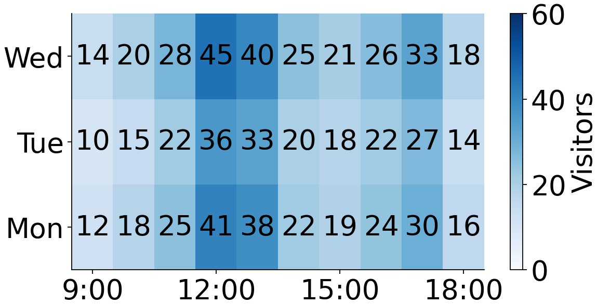
extent: 경계를 0.5씩 바깥에 두어 칸 중심을 시각 9~18·요일 번호 0~2에 맞춤aspect='auto': 칸을 정사각형 대신 Axes에 맞춤va='center': 세로 가운데 정렬Blues(값이 클수록 진한 파랑)·색 범위 0~60 선택 이유: 가장 진한 칸(45)의 검은 숫자도 보임
- 정확한 값 비교: 2차원 격자와 텍스트 주석
- 반복되는 모양의 인상: 3차원 표면
- 3차원 사용 시: 시점과 가려지는 부분 명시
Summary
주석·눈금·스타일·시점: 관측값은 그대로 두고 독자가 관측값을 읽는 위치와 방법을 변경
| 역할 | 기능과 구분 | 확인 근거 |
|---|---|---|
| 강조 | 텍스트 주석 text(데이터 좌표·ha), transform의 세 좌표계, 화살표 주석 annotate(xy·xytext·arrowprops) | 세로축 0~100에서 data 글자만 이동, 화살표가 (12, 41)·(17, 30)을 가리킴 |
| 눈금 | 눈금 위치 규칙은 위치, 눈금 문자열 규칙은 문자열 · 주 눈금과 보조 눈금 | 기본 간격 2(9.9 ÷ 6 = 1.65 이상)에서 17시 눈금 없음 → MultipleLocator(1)로 생김, 9:00·12:00·15:00·18:00과 1시간 보조 눈금으로 겹침 9쌍 → 0쌍 |
| 스타일 | rcParams.update, 스타일시트, style.context(블록)·style.use(실행 전체), 개별 지정 우선 | ggplot font.size 10 → report_rc로 24, 화살표 #EEEEEE → black |
| 3차원 | 3차원 Axes의 plot3D(선·점)·scatter3D(점마다 값 색), 와이어프레임·표면, view_init 시점, 2차원 격자 대안 | 관측 30개·면 18개, 정면 시점의 요일 겹침, 격자에서 화 13시 = 33 |
- 강조할 점과 눈금 단위: 자료에 맞춤
- 스타일: 적용 범위와 덮이는 키 확인
- 3차원은 모양, 정확한 값은 2차원 표기로 전달